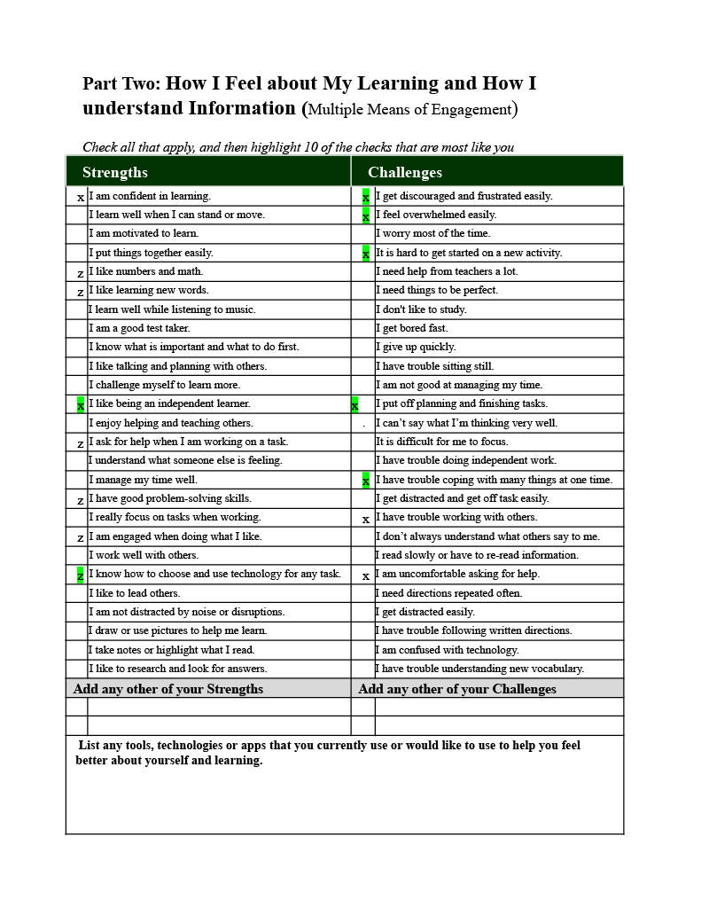

Me as a Learner
Submitted: Sep 15, 2023 | Due Date: Sep 15, 2023 | Grade: ---%
We did this 3 page document in the first week to help us understand how we learn best. Some of my strenghts and challenges include:
- I like being an independent learner
- I have trouble working with others
- I get uncomfable asking for help
I believe that those challenges and strenghts are because I am an introvert. There are others such as:
- I get discouraged and frustrated easily
- I feel overwhelmed easily
- I have trouble coping with multiple things at once

View full document as pdf